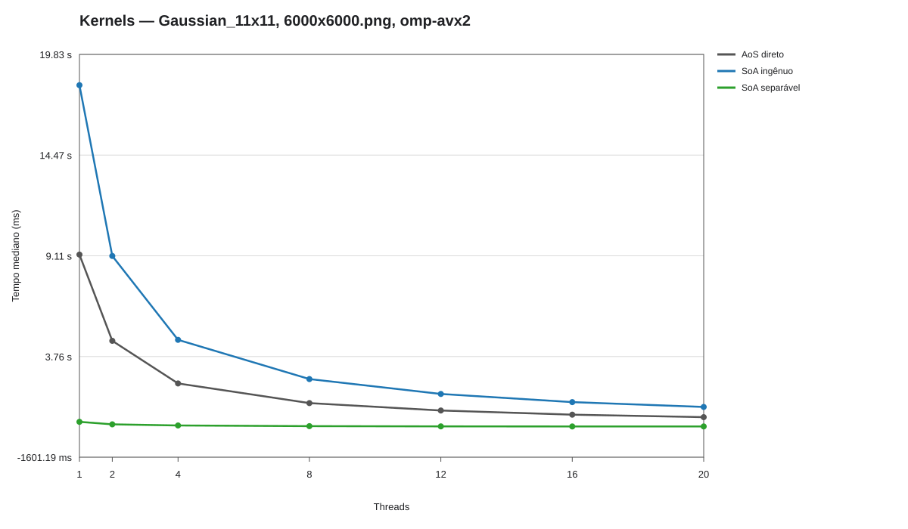
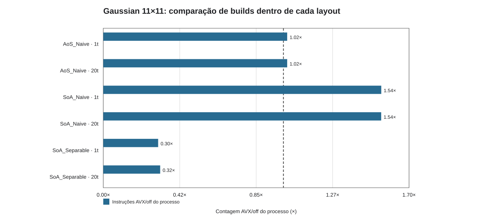

Investigação reprodutível · PCAD hypeGaussian 11×11
Distinguir layout, algoritmo separável, vetorização e conversão.
Por que SoA ingênuo com AVX2 piora?
confirmadoO que responde
O laço mantém 121 taps; o GCC registra vetorização de 8 bytes associada aos taps, não um eficiente laço externo de pixels. A regressão está no kernel.
parcialO que sugere
O processo AVX2 registra 1,54× instruções e 1,64–1,66× LLC load misses dentro do mesmo layout; isso é compatível com a escolha desfavorável, mas não separa as parcelas de tempo.
abertoO que falta
Contadores ligados/desligados somente no kernel, com mesmo número de iterações por layout.
No kernel isolado de 11×11 (824454), SoA ingênuo off/AVX = 0,508× em 1t e 0,503× em 20t: o tempo quase dobra. Conversão foi cronometrada à parte.
verificado
Kernels — Gaussian_11x11, 6000x6000.png, omp-avx2

- Pergunta
- Layout e convolução
- Métrica/eixo
- tempo mediano (ms); Tempo mediano (ms)
- Configuração
- 6000x6000, Haswell/AVX2
- Origem
- Job(s) 822854; 5 por configuração
- Permite concluir
- Comparação de kernels sem conversão no job anterior.
- Ressalva
- Mediana por configuração; confira mínimo–máximo na tabela antes de afirmar diferença.
Abrir figura originalTabela de suporteGerador
verificado
Gaussian 11×11: pressão de memória/cache no VTune HPC

- Pergunta
- Memória e VTune
- Métrica/eixo
- percentual/contador do perfil; não é tempo de kernel; Percentual (%)
- Configuração
- Gaussian 11×11, layouts AoS/SoA, omp-avx2/off-avx2, 20 threads, static
- Origem
- Job(s) 824167; 1 coleta VTune por caso
- Permite concluir
- HPC normalizado: não comparar tempos absolutos das coletas.
- Ressalva
- VTune altera a execução; use o perfil para diagnóstico, não como amostra de benchmark.
Abrir figura originalTabela de suporteGerador
verificado
Gaussian 11×11: comparação de builds dentro de cada layout

- Pergunta
- Tempo de kernel versus contadores do processo
- Métrica/eixo
- contagem AVX/off do processo inteiro; Contagem AVX/off do processo (×)
- Configuração
- 6000×6000, static, 1/20 threads
- Origem
- Job(s) 824542; 5 contagens por build
- Permite concluir
- Instruções AVX/off dentro de cada layout; processo inteiro.
- Ressalva
- Tempos de kernel e contadores vêm de jobs diferentes; perf envolve decodificação/hash e os eventos LLC têm multiplexação.
Abrir figura originalTabela de suporteGerador
verificado
Gaussian 11×11: comparação de builds dentro de cada layout

- Pergunta
- Tempo de kernel versus contadores do processo
- Métrica/eixo
- contagem AVX/off do processo inteiro; Contagem AVX/off do processo (×)
- Configuração
- 6000×6000, static, 1/20 threads
- Origem
- Job(s) 824542; 5 contagens por build
- Permite concluir
- LLC load misses AVX/off dentro de cada layout; processo inteiro.
- Ressalva
- Tempos de kernel e contadores vêm de jobs diferentes; perf envolve decodificação/hash e os eventos LLC têm multiplexação.
Abrir figura originalTabela de suporteGerador
Documentos e código: Tempos/GCC Memória
O que ganha no SoA separável: algoritmo ou AVX2?
confirmadoO que responde
Os dois efeitos existem no especializado: redução algorítmica e SIMD dentro do mesmo kernel.
parcialO que sugere
No benchmark genérico 3–11 taps (824170), o ganho direto/separável chega a 2,92× em 11 taps/20t, mas o efeito isolado AVX2 em 11 taps fica perto de 1×. Não transferir ganhos do especializado para o genérico.
abertoO que falta
Isolar conversão e banda de memória com contadores por fase para decomposição fina.
O especializado reduz 121 contribuições por pixel para 22 e vetoriza duas passadas de 32 bytes. Em 824454, off/AVX do mesmo separável = 2,444× (1t) e 1,361× (20t).
verificado
Gaussian: custo direto versus separável — 20 threads

- Pergunta
- Layout e convolução
- Métrica/eixo
- tempo mediano (ms); Tempo do kernel (ms)
- Configuração
- 20 threads, 3–11 taps, off-avx2/omp-avx2, static
- Origem
- Job(s) 824170; 5 por caso
- Permite concluir
- Tempos por tamanho e algoritmo, cinco amostras.
- Ressalva
- Mediana por configuração; confira mínimo–máximo na tabela antes de afirmar diferença.
Abrir figura originalTabela de suporteGerador
verificado
Gaussian: speedup algorítmico do SoA separável

- Pergunta
- Layout e convolução
- Métrica/eixo
- razão de tempos; sentido definido no eixo e na tabela; Speedup (×)
- Configuração
- 3–11 taps, off-avx2/omp-avx2, static
- Origem
- Job(s) 824170; 5 por caso
- Permite concluir
- Razão AoS direto / SoA separável = ganho algorítmico combinado.
- Ressalva
- AoS direto / SoA separável combina mudança de algoritmo e layout; NÃO é ganho AVX2.
Abrir figura originalTabela de suporteGerador
verificado
Gaussian genérica: efeito isolado de AVX2

- Pergunta
- Layout e convolução
- Métrica/eixo
- razão de tempos; sentido definido no eixo e na tabela; Speedup (off-avx2 / omp-avx2)
- Configuração
- Haswell/AVX2
- Origem
- Job(s) 823586; 1 coleta VTune por caso
- Permite concluir
- Razão off/AVX no mesmo algoritmo = efeito de build separado.
- Ressalva
- Compara builds dentro do mesmo algoritmo; não confundir com o ganho direto→separável.
Abrir figura originalTabela de suporteGerador
Documentos e código: Análise complementar Relatório GCC
Código: SoA ingênuo mantém a convolução 11×11
Fonte: layout_benchmark.cpp:235–255. O código mostra o trabalho distribuído; a confirmação de vetorização vem do relatório GCC, não do pragma sozinho.
235 #pragma omp parallel for schedule(runtime)
236 for (int y = 5; y < height - 5; ++y) {
237 OMP_SIMD
238 for (int x = 5; x < width - 5; ++x) {
239 float sum_red = 0.0f;
240 float sum_green = 0.0f;
241 float sum_blue = 0.0f;
242 for (int k = -5; k <= 5; ++k) {
243 for (int l = -5; l <= 5; ++l) {
244 const size_t source_pixel = static_cast<size_t>(y - k) * width + (x - l);
245 const float weight = GAUSSIAN_KERNEL_11X11[5 + k][5 + l];
246 sum_red += weight * source.red[source_pixel];
247 sum_green += weight * source.green[source_pixel];
248 sum_blue += weight * source.blue[source_pixel];
249 }
250 }
251 const size_t output_pixel = static_cast<size_t>(y - 5) * output_width + (x - 5);
252 destination.red[output_pixel] = clamp_to_byte(sum_red);
253 destination.green[output_pixel] = clamp_to_byte(sum_green);
254 destination.blue[output_pixel] = clamp_to_byte(sum_blue);
255 }
Código: duas passadas de 11 taps
Fonte: layout_benchmark.cpp:271–307. O código mostra o trabalho distribuído; a confirmação de vetorização vem do relatório GCC, não do pragma sozinho.
271 #pragma omp parallel for schedule(runtime)
272 for (int y = 0; y < height; ++y) {
273 const size_t input_row = static_cast<size_t>(y) * width;
274 const size_t output_row = static_cast<size_t>(y) * output_width;
275 OMP_SIMD
276 for (int output_x = 0; output_x < output_width; ++output_x) {
277 uint32_t sum = 0;
278 for (int tap = 0; tap < 11; ++tap) {
279 sum += BINOMIAL_11[tap] * input[input_row + output_x + tap];
280 }
281 output[output_row + output_x] = sum;
282 }
283 }
284 }
285
286 void gaussian_11_vertical_pass(
287 const std::vector<uint32_t>& intermediate,
288 std::vector<unsigned char>& destination,
289 int output_width,
290 int output_height) {
291 const uint32_t* input = intermediate.data();
292 unsigned char* output = destination.data();
293 #pragma omp parallel for schedule(runtime)
294 for (int output_y = 0; output_y < output_height; ++output_y) {
295 const size_t output_row = static_cast<size_t>(output_y) * output_width;
296 OMP_SIMD
297 for (int x = 0; x < output_width; ++x) {
298 uint64_t sum = 0;
299 for (int tap = 0; tap < 11; ++tap) {
300 sum += BINOMIAL_11[tap] * input[static_cast<size_t>(output_y + tap) * output_width + x];
301 }
302 output[output_row + x] = static_cast<unsigned char>((sum + BINOMIAL_11_NORMALIZER / 2) / BINOMIAL_11_NORMALIZER);
303 }
304 }
305 }
306
307 struct SeparableTimes {
GCC 824453: no SoA ingênuo, a linha 242 foi vetorizada em 8 bytes, mas o laço externo por pixel não recebeu uma vetorização eficiente. No separável, as linhas 278 e 299 foram vetorizadas em 32 bytes. Relatório GCC completo.
{kind=link}
{kind=link}